Группа протоколов FHRP
Теоретические сведения
Зачем нужна данная группа протоколов
First Hop Redundancy Protocols (протокол резервирования первого "хопа")
В домашней сети обычно один шлюз и там данная группа не нужна.
В сети, где несколько выходов из нее (резервные), необходимо в маршрутах указывать шлюз. Часто это адрес интерфейса маршрутизатора. Но что, если с этим интерфейсом или машрутизатором произойдет? В случае динамической маршрутизации, возможно, ничего страшного. Но если маршрутизация статическая или в сети есть обычные ПК, на которых, как правило, только один шлюз по умолчанию, часть сети может оказаться недоступной.
Для решения проблемы выбирают группу маршрутизаторов, сообщают им общий виртуальный адрес, за который они отвечают. Этот виртуальный адрес и будет шлюзом для всех остальных. Теперь, если что-то произойдет с одним из маршрутизаторов, вместо него за шлюз будет отвечать другой маршрутизатор.
Протоколы группы FHRP
- Hot Standby Router Protocol
- Протокол Cisco
- Максимум 2 маршрутизатора
- Может быть больше, но реально они будут задействованы, когда что-то произойдет с одним из двух
- Virtual Router Redundancy Protocol
- Свободный протокол
- Похож на HSRP
- Максимум 2 маршрутизатора
- Gateway Load Balancing Protocol
- Протокол Cisco
- Максимум 4 маршрутизатора
VRRP
Группы
Объединение маршрутизаторов в одну группу образует виртуальный маршрутизатор. Ему назначается IP-адрес, который будет использоваться как шлюз по умолчанию для узлов в сети.
Виртуальный MAC-адрес 0000:5E00:01xx, где xx - номер группы VRRP.
Роли устройств
VRRP Master - маршрутизатор, который отвечает за пересылку пакетов, которые отправлены на шлюз.
VRRP Backup - маршрутизатор, который находится в режиме ожидания и готов взять на себя роль VRRP Master router, как только тот станет недоступным.
Приоритет маршрутизатора (priority)
- В одной группе главный маршрутизатор выбирается на основе приоритета
- Может иметь значение от 1 до 255
- Чем выше значение, тем выше приоритет маршрутизатора
Если виртуальный адрес равен адресу одного из маршрутизаторов на его интерфейсе, то этому марщрутизатору назначается наивысший приоритет - 255.
Режим preempt
Когда главный маршрутизатор запускается позже, или "пропадает" на время, то его место занимает другой маршрутизатор из этой же группы.
Чтобы после "появления" главного маршрутизатора он снова мог им стать, нужно включать этот режим.
Таймеры
В рамках одной группы маршрутизаторы периодически отправляют друг другу hello- сообщения, чтобы убедиться, что соседнее устройство в норме.
HelloTime
Интервал времени, в течении которого маршрутизатор ожидает от активного маршрутизатора hello-пакеты.
- Интервал от 1 до 255
- По умолчанию 3 секунды
HoldTime
Интервал времени по истечении которого активный или резервный маршрутизатор объявляется недоступным.
- Интервал от 1 до 255
- По умолчанию 10 секунд
Обычно значение HoldTime берется равным 3 x HelloTime.
Аутентификация
Установка доверительных отношений между маршрутизаторами из одной группы позволяет изолироваться от злоумышленника, который может установить наивысший приоритет на своем устройстве и включить preempt. Это позволит ему "руководить" группой и весь трафик будет проходить через его устройство.
- Пароль должен быть одинаковым для всех маршрутизаторов, принадлежащих одной группе
- Пароль передается в открытом (не зашифрованном) виде
- Возможно использование хеша - MD5 (более безопасно)
Отсутствие встроенной балансировки нагрузки
Весь трафик идет через главный маршрутизатор.
✔️ Есть решение:
- На маршрутизаторах настраивается несколько VRRP-групп,
- В каждой группе сделать так, чтобы разные маршрутизаторы стали Master,
- Для одной части хостов сделать шлюзом один маршрутизатор, для другой части - другой маршрутизатор
Примеры
Пример 1 (Cisco)
Схема и деление на подсети
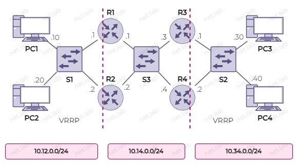
Адреса виртуальных маршрутизаторов - последний адрес в сети.
Настройка первой LAN
- Priority R1 - 200
- Priority R2 - 100
- На R1 режим
preempt
conf t
int e0/0
ip add 10.12.0.1 255.255.255.0
vrrp 1 priority 200
vrrp 1 ip 10.12.0.254
vrrp 1 preempt
no sh
end
wr mem
conf t
int e0/0
ip add 10.12.0.2 255.255.255.0
vrrp 1 priority 100
vrrp 1 ip 10.12.0.254
no sh
end
wr mem
ip 10.12.0.10/24 10.12.0.254
save
ip 10.12.0.20/24 10.12.0.254
save
Схема: (1)
Настройка второй LAN
- Priority R3 - 200
- Priority R4 - 100
- На R3 режим
preempt
conf t
int e0/0
ip add 10.34.0.1 255.255.255.0
vrrp 1 priority 200
vrrp 1 ip 10.34.0.254
vrrp 1 preempt
no sh
end
wr mem
conf t
int e0/0
ip add 10.34.0.2 255.255.255.0
vrrp 1 priority 100
vrrp 1 ip 10.34.0.254
no sh
end
wr mem
ip 10.34.0.30/24 10.34.0.254
save
ip 10.34.0.40/24 10.34.0.254
save
Схема: (1)
Проверка
sh vrrp ? - посмотреть состояние протокола.
Настройка центральной сети
Чтобы была доступность между ПК из разных подсетей, необходимо настроить маршрутизацию. Маршрутизация может быть статической или динамической, но на данный момент будет настроена статическая.
Между LAN1 и LAN2 есть несколько путей, и все их можно создать. Но если что-то произойдет с маршрутом, то устройство не всегда может знать, что с ним что-то не так.
Так, например, на R1 и R2 можно создать следующие маршруты
conf t
ip route 10.34.0.0 255.255.255.0 10.14.0.3
ip route 10.34.0.0 255.255.255.0 10.14.0.4
end
Аналогично нужно сделать на остальных маршрутизаторах.
show ip route - отобразить таблицу маршрутизации.
Допустим, на R3 интерфейс в сторону S2 или S3 станет нерабочим. Тогда R1 и R2, не зная, этого могут продолжать слать туда пакеты.
Схема: (1)
Есть несколько вариантов:
- Динамическая маршрутизация,
- SLA,
- VRRP.
Далее приводится конфигурация варианта с VRRP.
conf t
int e0/1
ip add 10.14.0.1 255.255.255.0
vrrp 12 priority 200
vrrp 12 ip 10.14.0.12
no sh
end
conf t
int e0/1
ip add 10.14.0.2 255.255.255.0
vrrp 12 priority 100
vrrp 12 ip 10.14.0.12
no sh
end
conf t
int e0/1
ip add 10.14.0.3 255.255.255.0
vrrp 34 priority 200
vrrp 34 ip 10.14.0.34
no sh
end
conf t
int e0/1
ip add 10.14.0.4 255.255.255.0
vrrp 34 priority 100
vrrp 34 ip 10.14.0.34
no sh
end
После этого можно настроить маршруты со шлюзом на виртуальный адрес.
conf t
ip route 10.34.0.0 255.255.255.0 10.12.0.34
end
conf t
ip route 10.12.0.0 255.255.255.0 10.12.0.12
end
VRRPv3 (IPv6)
enable
configure terminal
fhrp version vrrp v3
interface type number
vrrp group-id address-family ipv6
address ip-address [primary | secondary]
end
Пример 2 (Huawei)
Здесь приведен пример настройки VRRP на Huawei.
Требуется эмулятор eNSP, который можно скачать с оф. сайта Huawei
Пример актуален для eNSP 1.3.00 (V100R003C00).
Краткая справка по Huawei
Табл. Сравнение команд
| Cisco | Huawei |
|---|---|
| show | display |
| running-configuration | current-configuration |
| clear | reset |
| configure terminal | system-view |
| write | save |
| quit | exit |
| no | undo |
Выключить интерфейс
system-view
interface g0/0/0
shutdown
return
Включить интерфейс
system-view
interface g0/0/0
undo shutdown
return
Отобразить текущую конфигурацию устройства
display current-configuration
Далее приведен пример настройки протокола VRRP на Huawei.
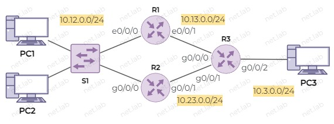
system-view
vrrp version v3
vrrp version-3 send-packet-mode v3-only
int e0/0/1
ip add 10.13.0.1 24
int e0/0/0
ip add 10.12.0.1 24
vrrp vrid 12 virtual-ip 10.12.0.12
vrrp vrid 12 priority 250
ip route-static 10.3.0.0 24 10.13.0.3
return
save
system-view
vrrp version v3
vrrp version-3 send-packet-mode v3-only
int g0/0/1
ip add 10.23.0.2 24
int g0/0/0
ip add 10.12.0.2 24
vrrp vrid 12 virtual-ip 10.12.0.12
vrrp vrid 12 priority 200
ip route-static 10.3.0.0 24 10.23.0.3
return
save
system-view
interface g0/0/2
ip add 10.3.0.3 24
int g0/0/0
ip add 10.13.0.3 24
int g0/0/1
ip add 10.23.0.3 24
ip route-static 10.12.0.0 24 10.12.0.1
ip route-static 10.12.0.0 24 10.23.0.2
return
save
display ip int br - посмотреть настроенные адреса на устройстве.
Настройка ПК выполняется интуитивно просто. Необходимо указать адрес, маску и адрес шлюза.
Пример 3 (MikroTik)
Здесь приведен пример настройки VRRP на MikroTik.
Актуально для Router OS 7.8 stable.
Преднастройки
При добавлении образа MikroTik в GNS3 по умолчанию устанавливается только 1 адаптер, поэтому необходимо увеличить данное число (рисунок ниже).
Также названия интерефейсов указываются с 0, а в CLI устройства их нумерация начинается с 1. Чтобы не запутаться, рекомендуется исправить в настройках GNS3 параметр, отвечающий за формат имени интерфейсов в GNS3 (рисунок ниже).

Настройка сети
Далее приведен пример настройки протокола VRRP на MikroTik.
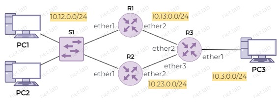
При подключении к устройству использовать логин admin и пароль <пусто>. Далее устройство может потребовать изменить пароль.
/system/identity/set name=MTk1
/ip/address/add address=10.12.0.1/24 interface=ether1 disabled=no
/ip/address/add address=10.13.0.1/24 interface=ether2 disabled=no
/ip/route/add dst-address=10.3.0.0/24 gateway=10.13.0.3 disabled=no
interface/vrrp/add version=2 vrid=12 authentication=simple password=pwd preemption-mode=yes priority=250 interface=ether1 interval=3s name=vrrp1
/ip/address/add address=10.12.0.12/24 interface=vrrp1 disabled=no
/system/identity/set name=MTk2
/ip/address/add address=10.12.0.2/24 interface=ether1 disabled=no
/ip/address/add address=10.23.0.2/24 interface=ether2 disabled=no
/ip/route/add dst-address=10.3.0.0/24 gateway=10.23.0.3 disabled=no
interface/vrrp/add version=2 vrid=12 authentication=simple password=pwd preemption-mode=yes priority=200 interface=ether1 interval=3s name=vrrp1
/ip/address/add address=10.12.0.12/24 interface=vrrp1 disabled=no
/system/identity/set name=MTk3
/ip/address/add address=10.3.0.3/24 interface=ether1 disabled=no
/ip/address/add address=10.13.0.3/24 interface=ether2 disabled=no
/ip/address/add address=10.23.0.3/24 interface=ether3 disabled=no
/ip/route/add dst-address=10.12.0.0/24 gateway=10.13.0.1 disabled=no
/ip/route/add dst-address=10.12.0.0/24 gateway=10.23.0.2 disabled=no
ip 10.12.0.10/24 10.12.0.12
save
ip 10.12.0.20/24 10.12.0.12
save
ip 10.3.0.30/24 10.3.0.3
save
ip add print - посмотреть настроенные адреса на маршрутизаторе
/interfaces/vrrp/print - посмотреть состояние интерфейса VRRP
/ip/route/print - посмотреть таблицу маршрутизации
Теперь можно проверить доступность PC3 с PC1
PC1> ping 10.3.0.30
84 bytes from 10.3.0.30 icmp_seq=1 ttl=62 time=4.527 ms
84 bytes from 10.3.0.30 icmp_seq=2 ttl=62 time=1.783 ms
В Wireshark можно проследить, что эхо-запрос идет через R1.
Теперь, если на R2 сделать приоритет группы VRRP выше, чем на R1, то трафик будет проходить через R2.
Изменение приоритета
При изменении приоритета на более высокий, чем на другом маршрутизаторе в группе, должен быть включен режим preempting.
/interface/vrrp/edit vrrp1 priority
В данном примере значение приоритета VRRP изменено на 254. В итоге эхо-запрос изменил путь - теперь проходит через R2.
Пример 4 (MikroTik + IPv6)
🐞 В виртуализации возникают проблемы с IPv6 и VRRP, схема может быть нестабильной.
Далее приведен пример настройки протокола VRRP на MikroTik.
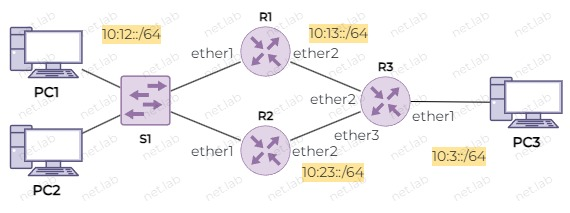
/system identity set name=MT1
/system package enable ipv6
/system reboot
/ipv6 address add address=10:12::1/64 interface=ether1 disabled=no
/ipv6 address add address=10:13::1/64 interface=ether2 disabled=no
/ipv6 route add dst-address=10:3::/64 gateway=10:13::3 disabled=no
/interface vrrp add version=3 vrid=126 preemption-mode=yes priority=250 interface=ether1 interval=3s v3-protocol=ipv6 name=vrrp6
/ipv6 address add address=10:12::12/64 interface=vrrp6 disabled=no
/system identity set name=MT2
/system package enable ipv6
/system reboot
/ipv6 address add address=10:12::2/64 interface=ether1 disabled=no
/ipv6 address add address=10:23::2/64 interface=ether2 disabled=no
/ipv6 route add dst-address=10:3::/64 gateway=10:23::3 disabled=no
/interface vrrp add version=3 vrid=126 preemption-mode=yes priority=200 interface=ether1 interval=3s v3-protocol=ipv6 name=vrrp6
/ipv6 address add address=10:12::12/64 interface=vrrp6 disabled=no
/system identity set name=MT3
/system package enable ipv6
/system reboot
/ipv6 address add address=10:3::3/64 interface=ether1 disabled=no
/ipv6 address add address=10:13::3/64 interface=ether2 disabled=no
/ipv6 address add address=10:23::3/24 interface=ether3 disabled=no
/ipv6 route add dst-address=10:12::/64 gateway=10:13::1 disabled=no
/ipv6 route add dst-address=10:12::/64 gateway=10:23::2 disabled=no
ip 10:12::10/64
save
ip 10:12::20/64
save
ip 10:3::30/64
save
/ipv6 add print - посмотреть настроенные адреса на маршрутизаторе можно с помощью команды.
/ipv6/route/print - посмотреть таблицу маршрутизации
Теперь можно проверить доступность PC3 с PC1
PC1> ping 10.3.0.30
84 bytes from 10.3.0.30 icmp_seq=1 ttl=62 time=4.527 ms
84 bytes from 10.3.0.30 icmp_seq=2 ttl=62 time=1.783 ms
Пример 5 (Linux)
keepalived - пакет, реализующий VRRP.
apt-get install keepalived - установка в Debian.
/etc/keepalive(d)/keepalive(d).conf - файл конфигурации.
Включить маршрутизацию
echo net.ipv4.ip_forward=1 >> /etc/net/sysctl.conf
sysctl -p
systemctl enable --now keepalived
systemctl start keepalived
Далее пример актуален для Debian 11. Для других версий возможны небольшие изменения.
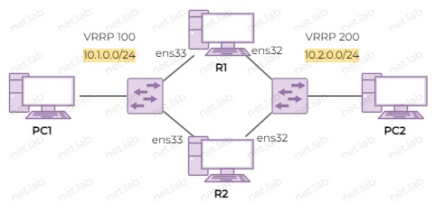
Для настройки нужно установить пакет keepalived (документация)
apt install keepalived
Возможно, потребуется добавить репозиторий в файл /etc/apt/sources.list
deb http://deb.debian.org/debian bullseye main contrib
deb-src http://deb.debian.org/debian bullseye main contrib
После этого обновить список пакетов
apt update
Далее приведены настройки для примера. Часть параметров можно было не указывать - использовались бы значения по умолчанию. Настройки должны быть в файле /etc/keepalived/keepalived.conf.
Параметр virtual_router_id должен быть одинаковым в пределах одной группы.
global_defs {}
vrrp_instance vrrp1 {
state MASTER
interface ens33
virtual_router_id 100
priority 200
advert_int 3
authentication {
auth_type PASS
auth_pass password1
}
virtual_ipaddress {
10.1.0.12/24
}
}
vrrp_instance vrrp2 {
state BACKUP
interface ens32
virtual_router_id 200
priority 100
advert_int 3
authentication {
auth_type PASS
auth_pass password2
}
virtual_ipaddress {
10.2.0.12/24
}
}
global_defs {}
vrrp_instance vrrp1 {
state BACKUP
interface ens33
virtual_router_id 100
priority 200
advert_int 3
authentication {
auth_type PASS
auth_pass password1
}
virtual_ipaddress {
10.1.0.12/24
}
}
vrrp_instance vrrp2 {
state MASTER
interface ens32
virtual_router_id 200
priority 100
advert_int 3
authentication {
auth_type PASS
auth_pass password2
}
virtual_ipaddress {
10.2.0.12/24
}
}
Далее можно запустить сервис keepalived
systemctl start keepalived
После некоторого времени на маршрутизаторах появятся дополнительные адреса.
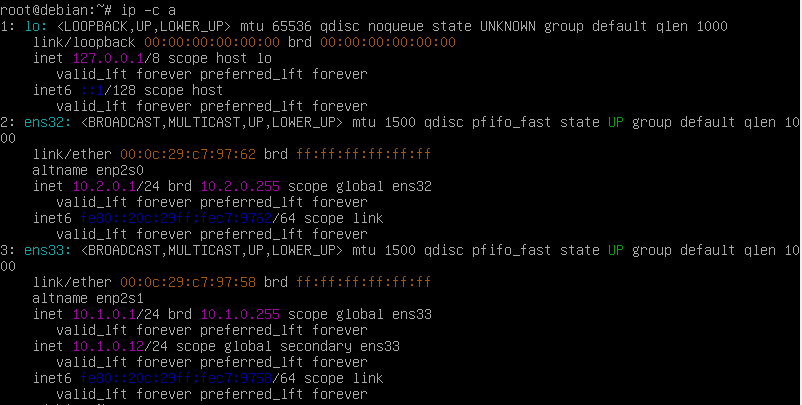
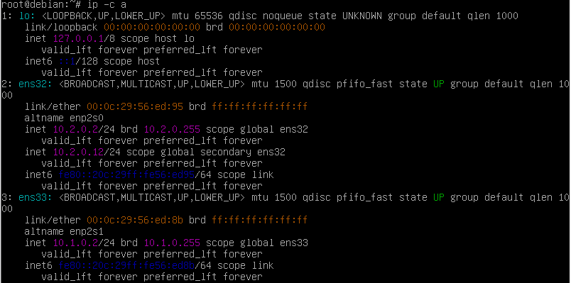
Далее можно проверить статус сервиса keepalived
systemctl status keepalived
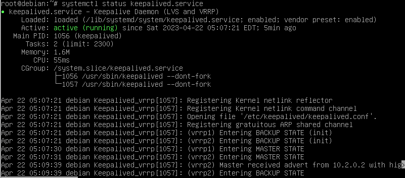
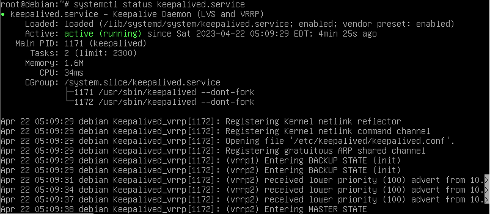
На рисунках показано, как менялся статус устройства в пределах FHRP-групп.
На клиентах необходимо указать в качестве шлюза 10.1.0.12 и 10.2.0.12. После чего можно проверить с помощью traceroute, как проходит трафик.
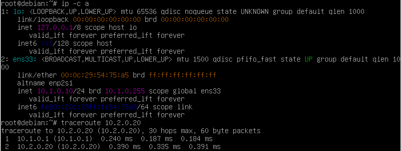
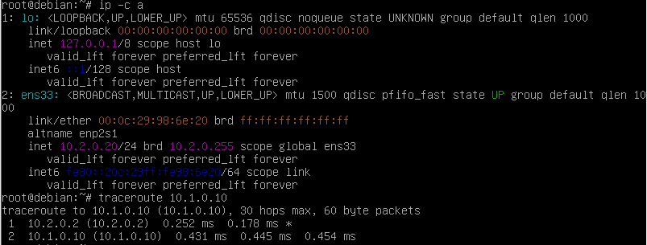
Трафик проходит через разные маршрутизаторы, т.к. в разных группах разные MASTER-маршрутизаторы.
🧰 Лабораторная работа
Ознакомиться перед выполнением
- Вместо ❔ или
xнужно подставить свой номер по журналу - Выполнять задание без "отмашки" не стоит ⛔, т.к. задание здесь может отличаться от актуальной версии
- У каждой работы есть срок сдачи 📅, который озвучивается на занятии, после которого работа не может быть защищена на максимальный балл 📉
- Дополнительные задания 📚 не являются обязательными, но по результатам сдачи лабораторной работы может быть выдано одно или несколько из них. Также дополнительное задание может быть сформулировано устно
- Для каждой лабораторной работы должен быть отчет 📝 с описанием выполнения ваших действий, оформление должно соответствовать требованиям (см. на сайте учебного заведения)
- Нужно уметь ответить на вопросы ❓ по теме, контрольные вопросы и другие связанные вопросы
- Примеры могут быть выполнены по желанию, а также выданы в качестве дополнительного задания с изменениями или без в случае неуспешной 😢 защиты основной работы
- Иногда в работах встречаются задания по IPv4 и IPv6 одновременно 🔗. Это считается как одна работа. Допускается сдача работы только с IPv4 или только с IPv6, но максимальный балл в таком случае получить невозможно
🎯 Цель работы: получить навыки настройки протокола VRRP в разных ОС.
Схема
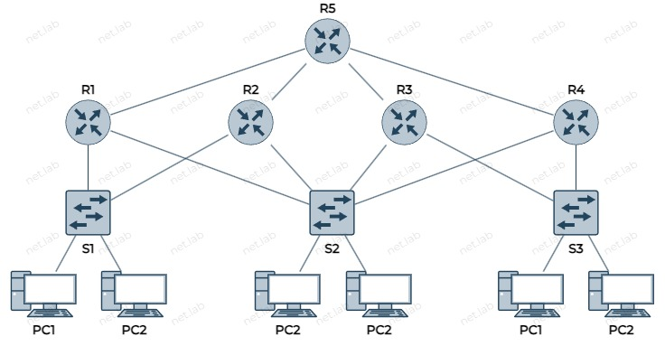
Условия
- Везде использовать VRRP
- В качестве устройств VRRP использовать Cisco, Linux и MikroTik (где какое и сколько - решать вам, но как минимум по одному каждое)
- Адрес исходной IPv4-сети –
10.x.0.0/16 - Разделить исходую сеть на 7 подсетей
- Адреса везде назначить статически
- Номера групп VRRP -
100 + x,200 + x - Адреса виртуальных маршрутизаторов в каждой группе – последний адрес подсети
- Везде использовать статическую маршрутизация (может потребоваться настроить SLA - мониторинг маршрута)
- Все устройства после настройки должны "пинговаться"
- При отключении любого маршрутизатора, связь между оставшимися должна остаться
📚 Дополнительные задания
- Повторить указанный пример.
- Заменить маршрутизаторы на указанный.
- Изменить адресацию и подсети на указанные.
🤔 Контрольные вопросы
- Сколько групп VRRP можно создать на устройстве? Чем это обосновано?
- На какой адрес отправляются сообщения VRRP?
- Что будет, если в одной группе на маршрутизаторах задать разные виртуальные IP-адреса?
- Что будет, если включить preempt на маршрутизаторе с приоритетом ниже, чем на другом маршрутизаторе?
- Какую информацию можно увидеть в Wireshark после выключения интерфейса (который используется в протоколе) на маршрутизаторе с ролью Active?
- Что произойдет, если указать разные на маршрутизаторах из одной группы?
- Если в группу добавить еще один маршрутизатор с самым низким/высоким приоритетом, то в каком состоянии он окажется? Какую роль он получит, если отключить один из первых двух маршрутизаторов?
- Какие способы разделения на подсети существуют?
- Как зависит длина маски и префикса от количества необходимых подсетей или устройств в каждой подсети?
- Как посчитать количество подсетей на схеме?
- Какие режимы балансировки имеются в GLBP? В чем их особенность?
- Как можно выполнить балансировку нагрузки в протоколе HSRP или VRRP?
- Если выполнить эхо-запрос из одной сети в другую, то каким маршрутом пакеты идут в одну сторону, а каким - обратно? Всегда ли пути (туда и обратно) одинаковы?
- Какой адрес используют маршрутизаторы для обмена служебными сообщениями по изучаемым в данной работе протоколам?
- По какому правилу формируется MAC-адрес виртуальных маршрутизаторов в каждом протоколе?
Используя данный сайт и его ресурсы, вы соглашаетесь с политикой и соглашениями сайта.
©️ Оформление, изложение, медиаматериалы. И. Попов, 2020-2025
Сделано с помощью Material for MkDocs.